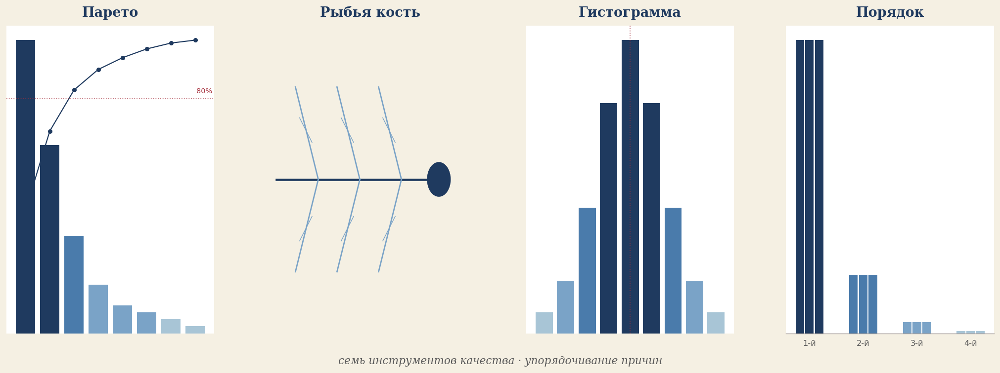
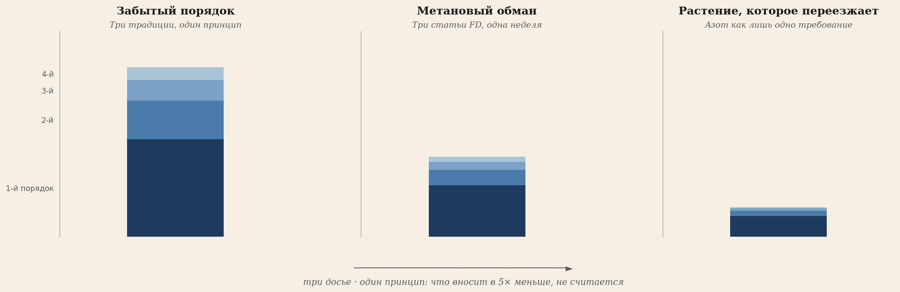
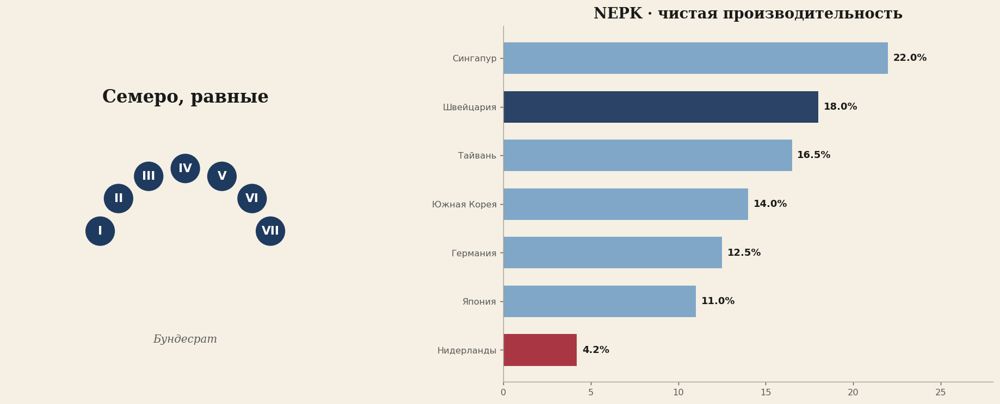
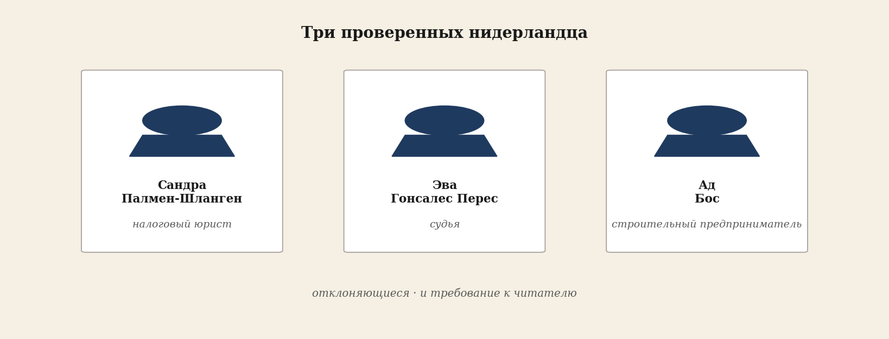

У этого выпуска есть ритм. Четыре части, построенные друг на друге. Читайте по порядку — или выберите ту часть, которая привлекает. Каждая статья самостоятельна.
Инструмент
Основа — что такое порядок, откуда он взялся и что он принёс в деньгах тем, кто им пользовался.

Письмо читателю
Этот выпуск не предлагает мнения, а вручает инструмент.
七つ道具 — Семь, сделавших разницу
Семь инструментов качества Каору Исикавы и анализ порядков из стального строительства. Инструмент, которым Япония нас обогнала.
Формула успеха, которую мы разучились применять
Япония, Корея и Китай обогнали нас, потому что приняли инструмент, который мы выбросили.
Диагностика
Принцип и два досье — метан и азот — в которых нидерландская пресса и политика расставляют вес наоборот.

Забытый порядок
Три традиции, один принцип: то, что вносит в 5 раз меньше главного фактора, не считается.
Метановое заблуждение
Три статьи FD за одну неделю, три инверсии веса, четыре требования к прессе.
Растение, которое переезжает
Азот, засуха, климатический сдвиг, фрагментация — и политика, видящая только один из четырёх факторов.
Ответ в проектировании
Что есть у страны, которая сделала проектирование правильно: Швейцария с 1848 года, с данными по производительности 21 страны.

Люди и задача
Трое проверенных нидерландцев, сохранивших компас в мире с перевёрнутыми порядками — и что вы сами можете сделать.
